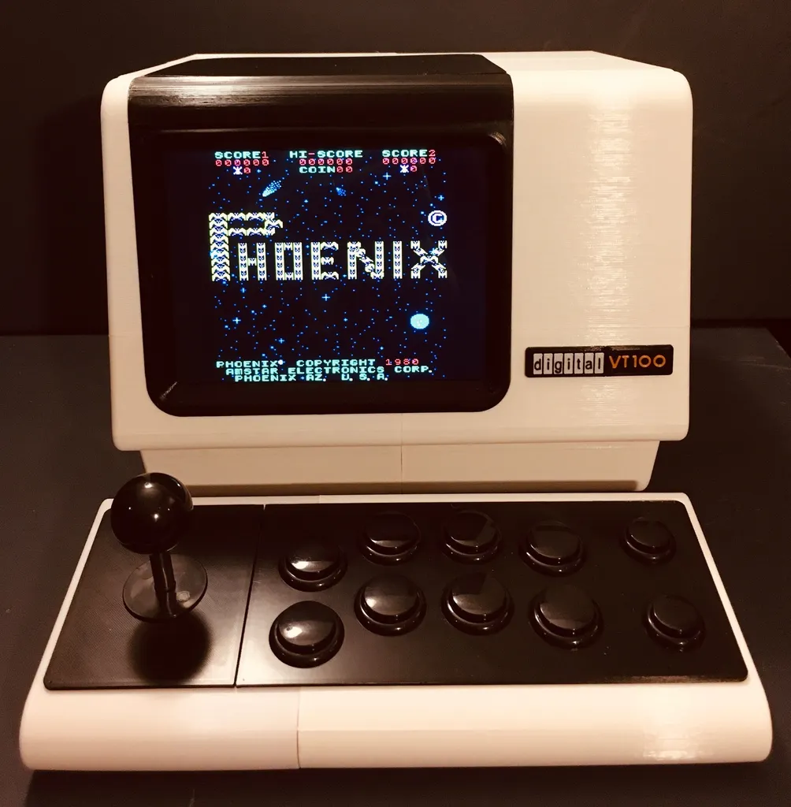
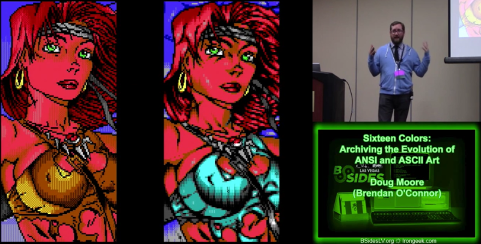

¿Qué es ANSI?
ANSI son las siglas de American National Standards Institute, una organización de Estados Unidos que crea estándares para muchas industrias, incluyendo la informática.
En programación, cuando decimos "ANSI" casi siempre nos referimos a los códigos de escape ANSI. Estos son secuencias especiales de caracteres que le dicen a la terminal cómo mostrar el texto: con color, negrita, subrayado, etc.

Terminal VT100 Original — donde nacieron los códigos ANSI

Terminal VT100 Reproduction
Historia
- 1918 — Se funda el ANSI en EE.UU.
- 1963 — Se publica el estándar ASCII.
- 1979 — Se adoptan los códigos de escape para terminales.
- Años 80 — El ANSI Art se vuelve muy popular.
- Hoy — Todos los sistemas operativos modernos lo usan.
Ejemplo de ANSI Art de los años 80

Ejemplo de ANSI y ASCII art
Colores ANSI
Los códigos van dentro de una secuencia: \e[ + número + m
| Color | Código | Vista previa |
|---|---|---|
| Rojo | \e[31m |
Texto rojo |
| Verde | \e[32m |
Texto verde |
| Amarillo | \e[33m |
Texto amarillo |
| Azul | \e[34m |
Texto azul |
| Magenta | \e[35m |
Texto magenta |
| Cian | \e[36m |
Texto cian |
Para resetear el color: \e[0m
Ejemplos de código
Python
print("\033[32m Hola en verde \033[0m")
print("\033[31m Error! \033[0m")
print("\033[33m Advertencia \033[0m")
Bash / Terminal
echo -e "\e[32m Éxito \e[0m"
echo -e "\e[31m Error \e[0m"
echo -e "\e[1m Negrita \e[0m"
JavaScript (Node.js)
console.log("\x1b[32m Verde \x1b[0m")
console.log("\x1b[31m Rojo \x1b[0m")
console.log("\x1b[33m Amarillo \x1b[0m")
console.log("\x1b[34m Azul \x1b[0m")
console.log("\x1b[1m Negrita \x1b[0m")
Así se ve en la terminal:
$ python3 colores.py
✔ Archivo guardado correctamente
✖ Error: no se encontró el archivo
⚠ Advertencia: versión desactualizada
ℹ Info: conectando al servidor...
$ █
¿Para qué se usa?
📋 Logs de apps
Errores en rojo, éxito en verde y advertencias en amarillo.
🛠 Dev tools
Git, npm y pytest usan ANSI para resaltar resultados.
🎨 ANSI Art
Imágenes hechas con caracteres de texto y colores.
💻 Scripts
Barras de progreso y menús en la consola.